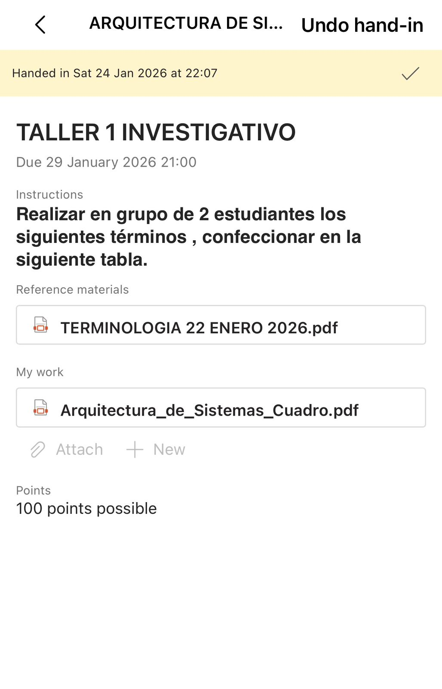
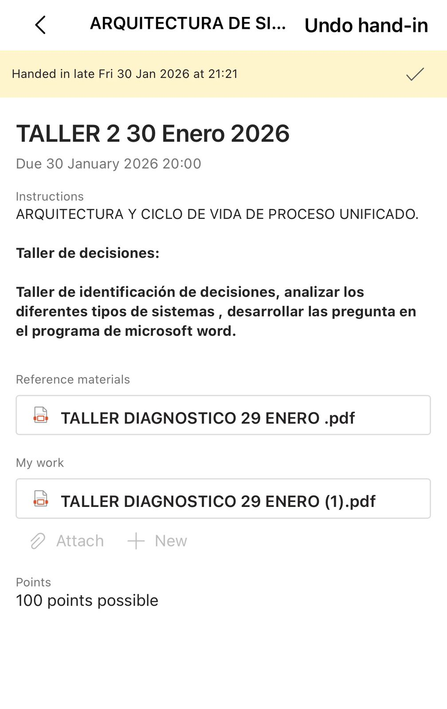
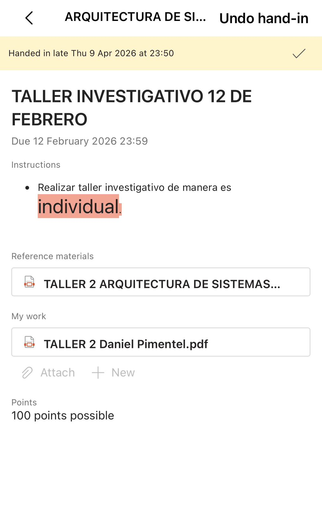
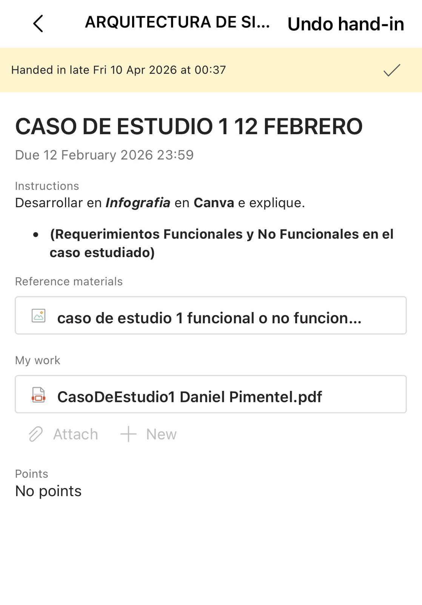
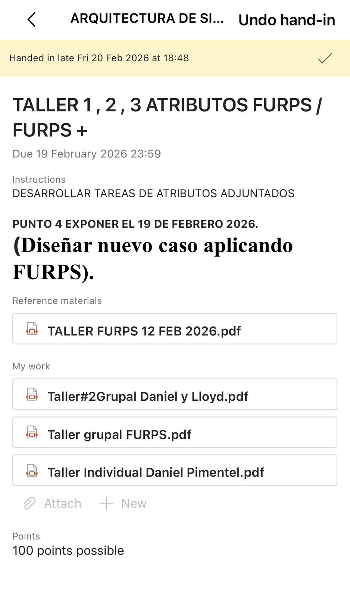
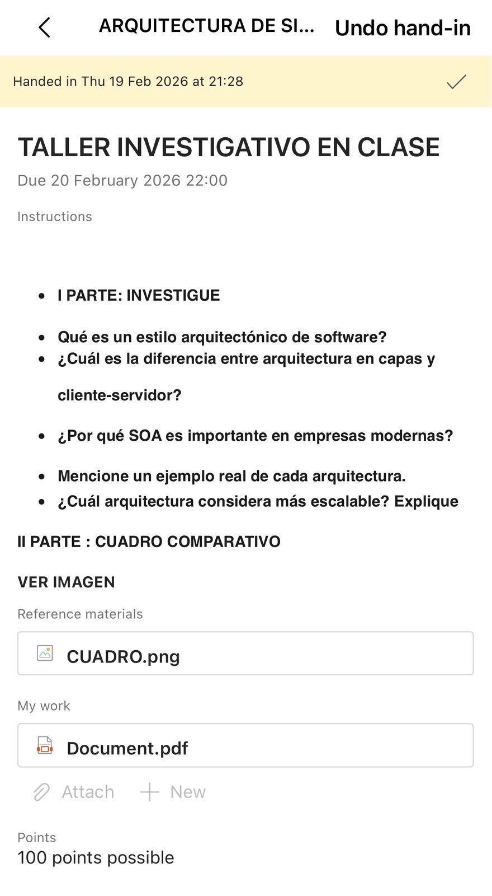
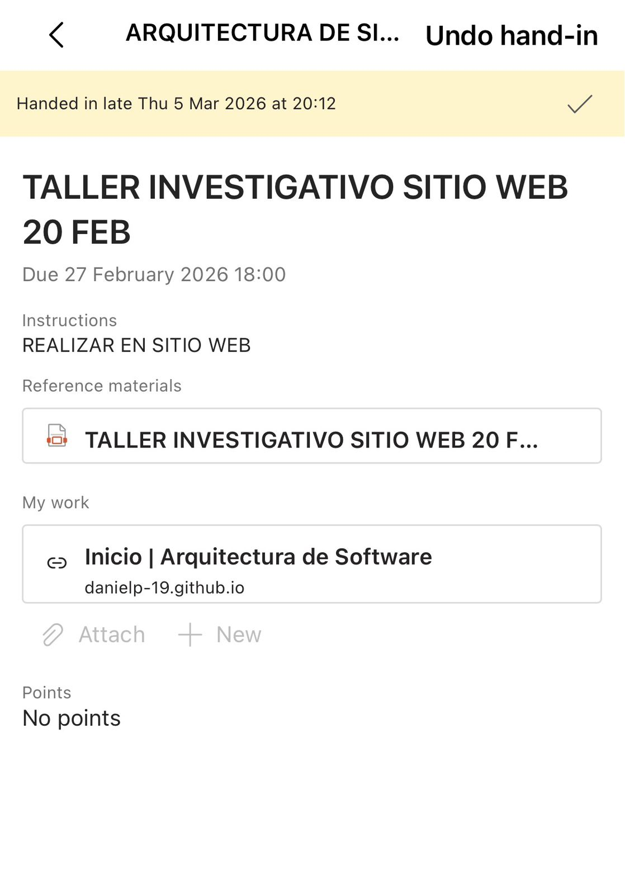
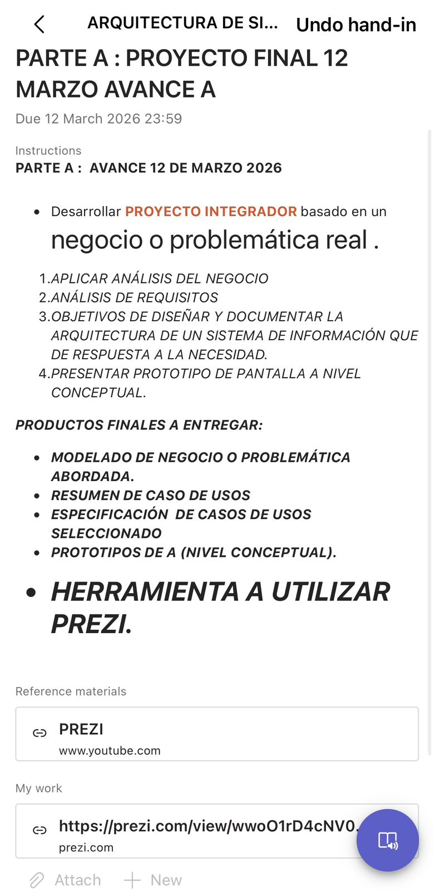

Este es mi portafolio donde muestro mi proceso, trabajos y resultados.
El portafolio en arquitectura de software permite evidenciar de forma organizada los conocimientos y habilidades adquiridas durante el curso, mostrando el desarrollo de soluciones, el uso de tecnologías y la aplicación de buenas prácticas.
Además, facilita la documentación de decisiones técnicas y refleja el progreso del aprendizaje, funcionando también como una herramienta de presentación profesional.
Objetivo General:
Presentar de manera estructurada los conocimientos y competencias adquiridas en arquitectura de software.
Objetivos Específicos:
Ejemplifique su aplicación en un sistema de información.
Relacione el término con la arquitectura de un sistema real o
hipotético.
Indicaciones: Realizar en grupo de 2 estudiantes los siguientes
términos , confeccionar en la siguiente tabla.
Objetivo del Taller
Diagnosticar los conocimientos previos del estudiante sobre análisis de
sistemas, arquitectura de sistemas y uso de tecnología, mediante el estudio
de un sistema de uso cotidiano.
Instrucciones Generales.
1. Seleccione un sistema conocido (real o digital).
2. Analice el sistema y responda las siguientes preguntas de forma clara
y concreta.
Desarrollar en Infografia en Canva e explique.
(Requerimientos Funcionales y No Funcionales en el caso estudiado)
OBJETIVO: Analizar, identificar y clasificar los requerimientos funcionales y no funcionales de
un sistema, comprendiendo su impacto en el diseño arquitectónico.
Caso de Estudio
Una empresa desea desarrollar un Sistema de
Gestión de Ventas en Línea que permita administrar
productos,
clientes
y
pedidos.
El sistema será utilizado por clientes y
administradores, y deberá funcionar a través de la
web y dispositivos móviles.
Objetivos Generales Integrados
Analizar y aplicar el modelo FURPS para identificar los atributos de calidad más críticos en distintos escenarios, evaluando su impacto en la arquitectura del sistema.
Justificar decisiones arquitectónicas a partir de los atributos identificados, considerando riesgos potenciales, conflictos entre atributos (como rendimiento vs seguridad) y su influencia en el diseño del sistema.
Definir y aplicar métricas medibles que permitan evaluar el cumplimiento de los atributos de calidad, garantizando control y validación del sistema.
Diseñar un caso práctico integral (como banca, e-commerce o gobierno digital), aplicando el modelo FURPS completo, identificando relaciones y conflictos entre atributos, y proponiendo soluciones arquitectónicas fundamentadas.
I PARTE: INVESTIGUE
Qué es un estilo arquitectónico de software?
¿Cuál es la diferencia entre arquitectura en capas y cliente-servidor?
¿Por qué SOA es importante en empresas modernas?
Mencione un ejemplo real de cada arquitectura.
¿Cuál arquitectura considera más escalable? Explique
II PARTE : CUADRO COMPARATIVO .
Objetivo del Taller Diagnosticar los conocimientos previos del estudiante sobre análisis de sistemas, arquitectura de sistemas y uso de tecnología, mediante el estudio de un sistema de uso cotidiano. Instrucciones Generales 1. Seleccione un sistema conocido (real o digital). 2. Analice el sistema y responda las siguientes preguntas de forma clara y concreta.
Evidencia 1

Evidencia 2

Evidencia 3

Evidencia 4

Evidencia 5

Evidencia 6

Evidencia 7

Evidencia 8
Durante este curso aprendí nuevas habilidades, enfrenté retos y mejoré mis capacidades en desarrollo web.
Durante este curso aprendí nuevas habilidades, enfrenté retos y mejoré mis capacidades en desarrollo web.